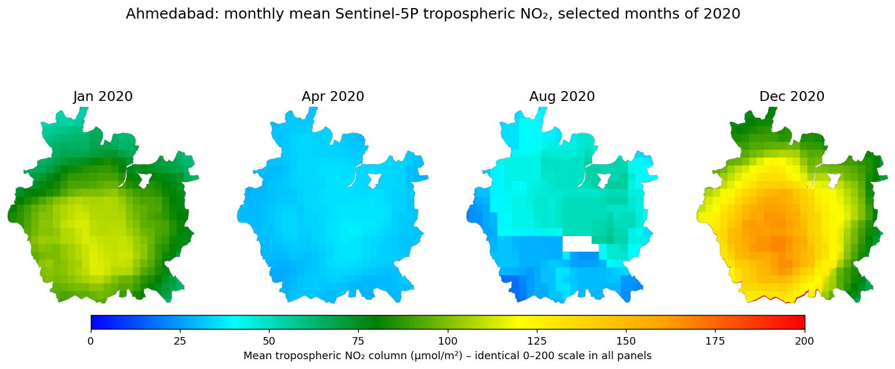
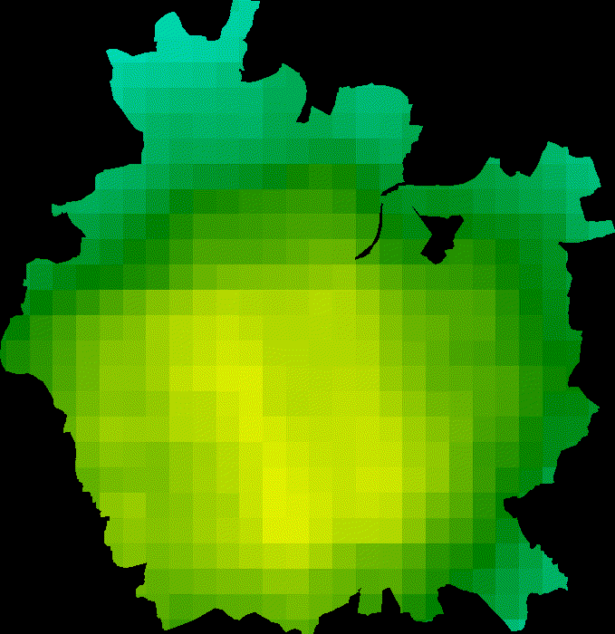
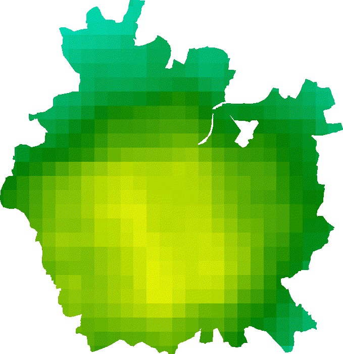
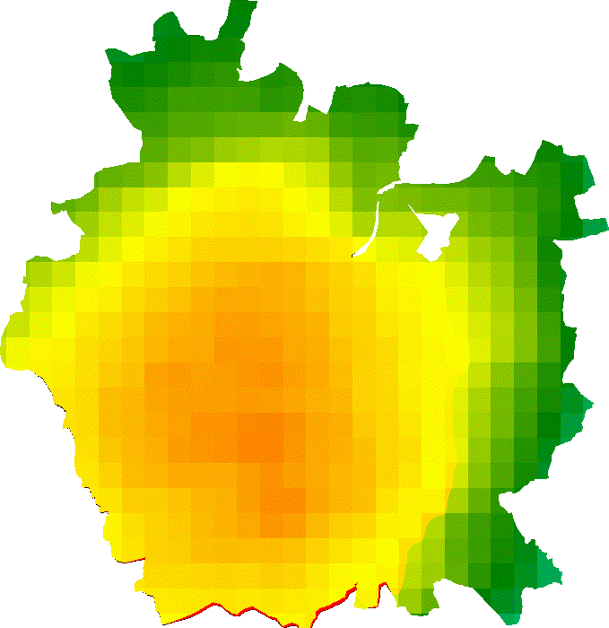
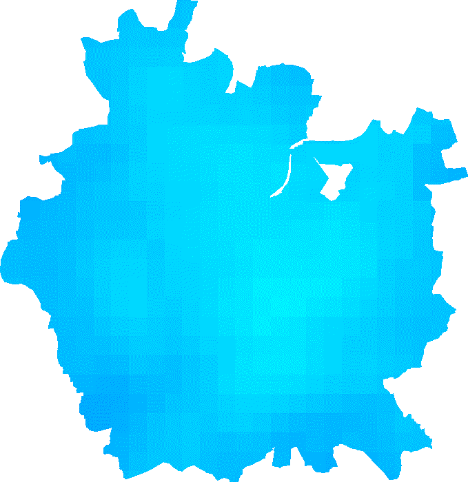

Over half of Ahmedabad’s residents live where satellite NO₂ is highest.
Sentinel-5P tropospheric NO₂ for 2020 was composited over the Ahmedabad Urban Local Body boundary. The top quartile of city pixels was combined with WorldPop 2020 age–sex population to report how many men and women reside in areas with relatively high satellite-observed NO₂.
Spatial pattern of NO₂ in 2020
All maps use one fixed 0–200 µmol/m² colour scale (tropospheric NO₂ vertical column), so months and annual values are directly comparable. The white outline is the city boundary.



Dynamic temporal outputs
Twelve monthly mean composites (January–December 2020) are shown three ways: an animated GIF, a month slider and a before–after swipe.




Monthly city-wide mean
Population in the highest-NO₂ quartile
“Relatively high” is defined by a transparent city-specific rule: pixels in the top quartile (≥ the 75th percentile, 81.2 µmol/m²) of the 2020 mean NO₂ composite inside the boundary. The mask was applied to WorldPop 2020 male and female population (100 m) and summed.
| Group | City population | In highest-NO₂ quartile | % of group | Share of quartile population |
|---|---|---|---|---|
| Male | 3,231,278 | 1,684,826 | 52.14% | 52.80% |
| Female | 2,889,152 | 1,506,097 | 52.13% | 47.20% |
| All | 6,120,431 | 3,190,923 | 52.14% | 100% |


Discussion
Spatial pattern. NO₂ is not spread evenly. In the 2020 mean, values are lowest toward the northern and eastern margins and highest across the central-western and southern core, and the top quartile forms a single connected zone. The January and December panels show the same shape at higher intensity, with a clear core-to-edge gradient. Even so, the whole city lies in a narrow band (46.7–91.6 µmol/m²) because each Sentinel-5P pixel is several kilometres wide and smooths local sources such as traffic corridors and industry.
Temporal pattern. The monthly maps show a strong seasonal cycle. Values are highest in the winter months (November–February), fall steeply in March–April and stay low through the monsoon (roughly June–September), then rebuild from October. April and May are the lowest months, which coincides with India’s national COVID-19 lockdown from late March 2020. The seasonal chart cannot separate lockdown effects from normal seasonality (monsoon rain, wind, a deeper winter boundary layer and longer NO₂ lifetime in winter), so the drop should be described as consistent with reduced activity rather than caused by it.
Exposure pattern. Roughly a quarter of the city’s area, by construction, holds 52.1% of its modelled residents (3.19 million of 6.12 million). The densest part of the city therefore coincides with its highest NO₂ columns. The sex split is almost identical: 52.14% of men and 52.13% of women live in the high-NO₂ zone, and men make up 52.8% of the zone’s population, the same as their share citywide (modelled ratio of about 1,118 men per 1,000 women). On this evidence the high-NO₂ zone does not differ by sex; differences would require finer, non-modelled data.
Method, sources and limitations
Boundary. The Ahmedabad ULB polygons come from the Indian Urban Local Body (SBM) boundary file SBM_ULBs.geojsonl. Features whose ulbnm contains “Ahmedabad” were selected. This returns two polygons, the main ULB (code 802484) and the small Ahmedabad Cantonment polygon (802483), and both are used. The result was reprojected to EPSG:4326 and converted to an Earth Engine FeatureCollection with geemap.geopandas_to_ee.
NO₂. COPERNICUS/S5P/OFFL/L3_NO2, band tropospheric_NO2_column_number_density, filtered to the boundary and 1 Jan–1 Jan 2021 (5,178 scenes). Monthly composites are per-pixel means over each calendar month, and the annual composite is the mean of all scenes. Values were multiplied by 10⁶ to show µmol/m² (the dataset unit is mol/m²). The same 0–200 µmol/m² scale is used throughout. Statistics use a 1 km reduction scale.
Population. WorldPop/GP/100m/pop_age_sex for 2020 (mosaic of 4 tiles). Male bands M_0…M_80 and female bands F_0…F_80 were summed separately, clipped to the boundary, masked to the top-quartile NO₂ zone and summed at 100 m.
qa_value mask was applied in this notebook, so low-quality retrievals could remain in some scenes.Data: Copernicus Sentinel-5P OFFL L3 NO₂ via Google Earth Engine; WorldPop Global Project 100 m age–sex (2020); Indian Urban Local Body boundaries (SBM). Analysis in Python with earthengine-api, geemap and geopandas.